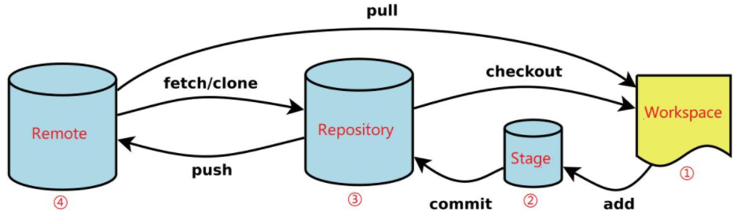
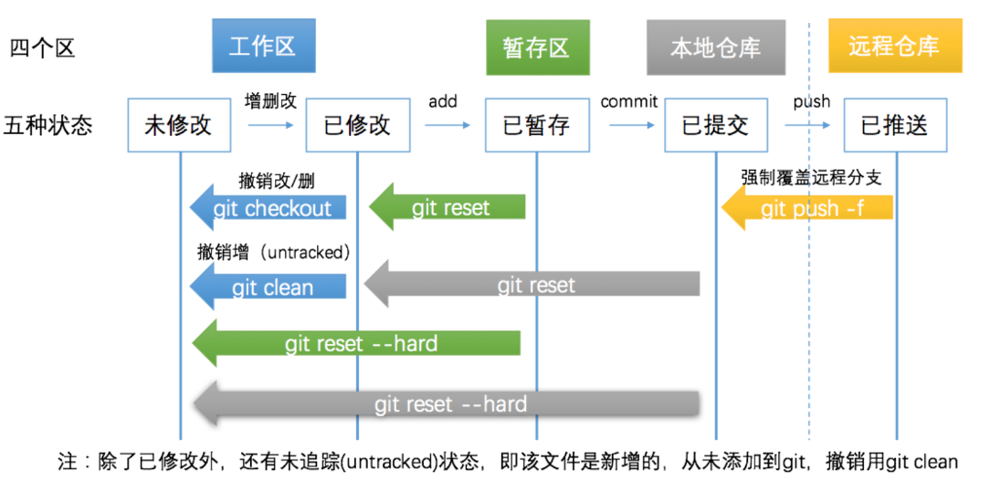
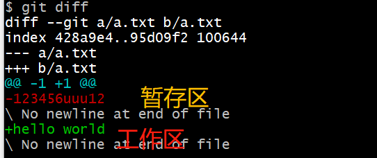
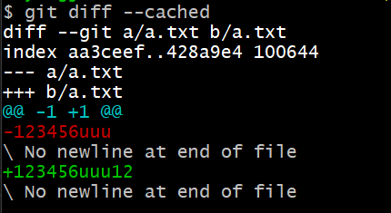
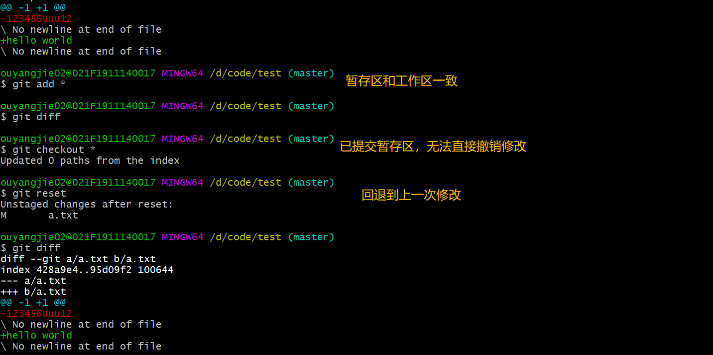
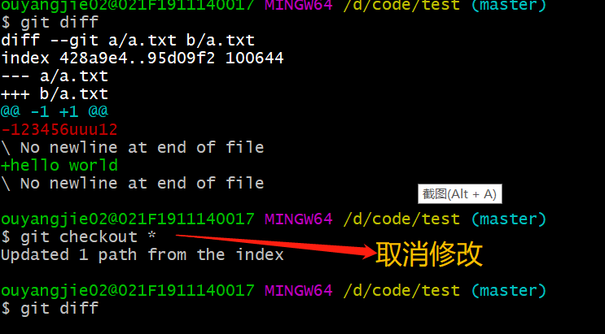
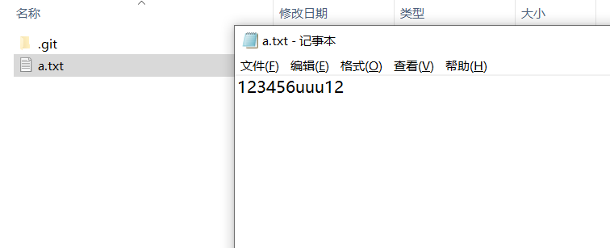
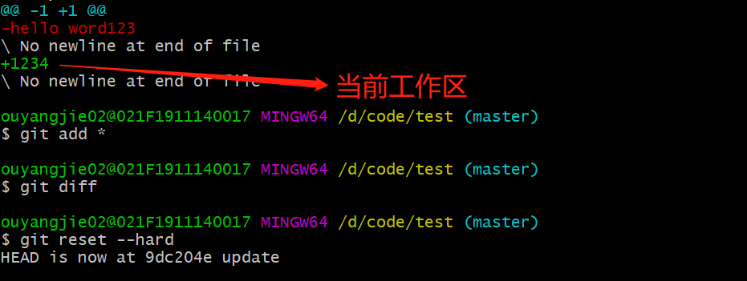
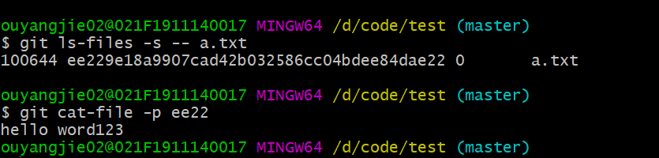

Git基础一

avatar
四个区五个状态 —— 五种状态间的撤销操作

avatar
| 区 | 名称 |
|---|---|
| 工作区 | Working Area |
| 暂存区 | Stage |
| 本地仓库 | Local Repository |
| 远程仓库 | Remote Repository |
| 状态 | 名称 |
|---|---|
| 未修改 | UnModified |
| 已修改 | Modified |
| 已暂存 | Staged |
| 已提交 | Remote Repository |
1. 已经修改，但还未暂存（还没有执行 git add）
| 操作 | 含义 |
|---|---|
| git diff | 检查的是工作区与暂存区之间的差异 |
| git checkout | 撤销项目下所有的修改 |
| git clean -f | 撤销新增的文件 |
| git clean -df | 撤销新增的文件和文件夹 |

avatar
2. 已经修改，但还未提交（还没有执行 git commit）
| 操作 | 含义 |
|---|---|
| git diff –cached | 检查的是暂存区和本地仓库的差异 |
| git reset | 暂存区的修改恢复到工作区,即当前暂存区不存在最新的内容 |
| git reset –soft | 与git reset等价，回到已修改状态，修改的内容仍然在工作区中 |
| git reset –hard | 回到未修改状态，清空暂存区和工作区 |
必须先执行git reset = git reset –soft，否则无法撤销修改

avatar

avatar
通过git reset + git checkout 命令->取消了工作区的修改，此时工作区的内容回退到了修改之前（hello world -> 123456uuu12）

avatar

avatar
回到未修改状态，清空暂存区和工作区，此时工作区的内容回退到了修改之前（123 -> hello word123），彻底还原到上一次提交的状态且无法找回
1 | git reset --hard = git reset + git checkout |

avatar
清空（不是删除所有内容，而是回退到修改之前的暂存区内容）

avatar
3. 已提交，未推送
执行完commit之后，会在仓库中生成一个版本号(hash值)，标志这次提交。之后任何时候，都可以借助这个hash值
回退到这次提交。
| 操作 | 含义 |
|---|---|
| git diff master origin/master | 查看本地仓库与本地远程仓库的差异 |
| git reset –hard HEAD^ | 回退到本地仓库上一个版本 |
| git reset –hard |
回退到任意版本 |
| git reset –soft/git reset | 回退且回到已修改状态，修改仍保留在工作区中 |
4. 已推送到远程
| 操作 | 含义 |
|---|---|
| git push -f orgin master | 强制覆盖远程分支 |
| git push -f | 如果之前已经用 -u 关联过，则可省略分支名 |
总结
1 | 首先，先用git status查看下当前状态。 |